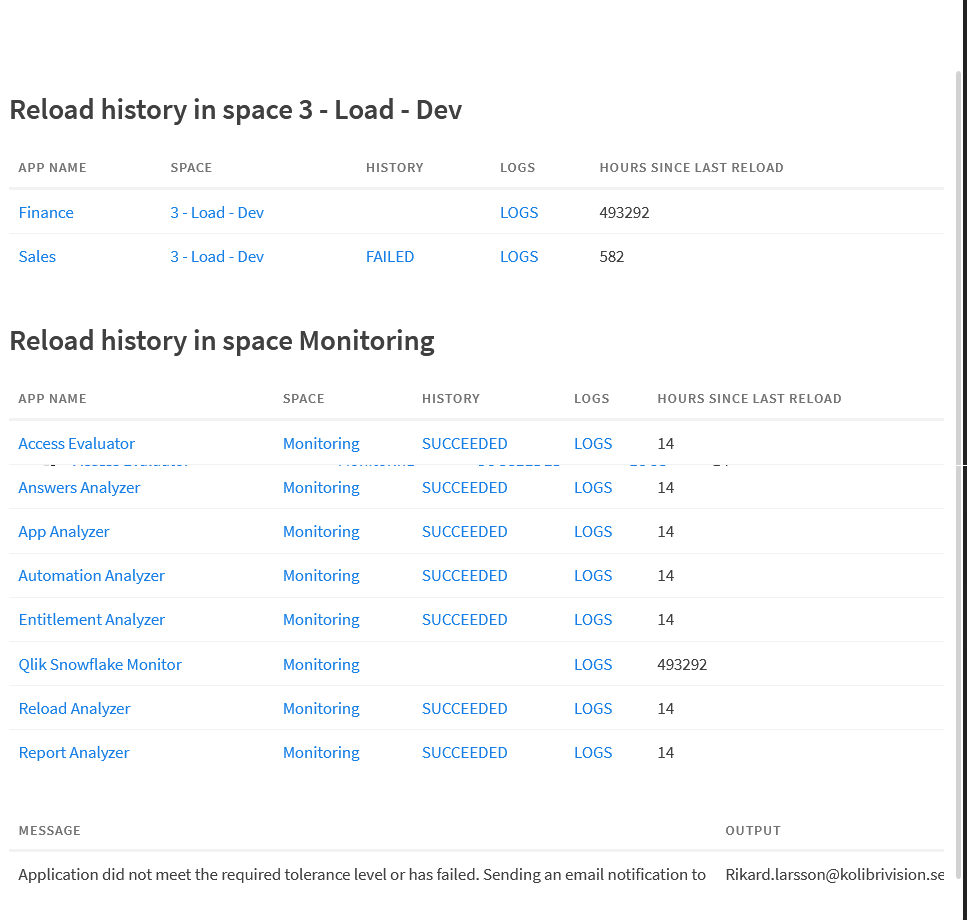

Self-service reload scheduling in Qlik Cloud lets users own their own reload cadence without going through a central automation. That's the upside. The downside is monitoring: when a self-service reload fails, the built-in alerting has real limitations — constrained channels, limited control over who gets notified, and no native way to flag apps that simply haven't been updated in too long. This automation fills that gap.
The problem with built-in monitoring
Qlik Cloud does have failure notifications for reloads, but in practice they tend to fall short for managed environments:
- Notifications go to the app owner — not necessarily the team or the person on call
- Channel options are limited; routing alerts to a shared inbox or ticketing system requires workarounds
- There's no tolerance-based alerting — an app that last reloaded successfully three weeks ago looks fine to Qlik, even if it should be running daily
- No consolidated view — failures are per-app events, not a space-level health summary
The automation below solves all of these. It runs on a schedule, scans a configured space, checks every app for two conditions (failed reload, or stale beyond a tolerance threshold), and sends a single formatted email listing everything that needs attention.
What it does
On each run, the automation:
- Lists all apps in the configured space(s)
- For each app, fetches the last reload record via the Qlik Cloud API
-
Flags the app if either condition is true:
- The last reload ended in a failure state
- The app hasn't reloaded within the tolerance window (default: 7 days), even if the last reload was successful
- Skips apps currently in progress — no false alarms on running reloads
- Collects all flagged apps and sends a single HTML email with a summary table
- Updates the run title with a health summary: Applications 15: (12 successful, 1 reloading, 2 failed)
- Sends a recovery email if the previous automation run itself had failed — so you know when things are healthy again
The logic walkthrough
The automation has 67 blocks. Most of them are email HTML construction — the actual decision logic is straightforward. Here's the meaningful flow:
App loop
After fetching the app list, it loops over every app in the space. For each one:
Get app info → Get space info
↓
[If onlyManagedSpaces = 1 and space is not managed] → skip
Get last reload record → Calculate secondsSinceLastReload
[If last reload status = succeeded OR no prior reload]
↓ Yes
[If secondsSinceLastReload > tolerance threshold]
↓ Yes → flag as stale, status = "Not been updated the last N day(s)"
↓ No → count as successful, move on
[If last reload status = failed]
↓
[If currently reloading?]
↓ Yes → count as reloading, move on
↓ No → flag as failed, status = reload failure state from API
Every flagged app — whether failed or stale — gets added to FailedAppsList.
Counters for successful, reloading, and failed apps are tracked throughout the loop and
written into the run title at the end.
Email build
Once the loop finishes, if FailedAppsList is not empty, the email is assembled.
The table has four columns:
| Column | Source |
|---|---|
| Name | App name from the Qlik Cloud item API |
| Status | Failure state from the reload API, or "Not been updated the last N day(s)" |
| Last Reload | Timestamp of last completed reload, or "Never been reloaded" |
| Details | Direct link to the app's reload history page |
The Details link goes straight to {tenantHostname}/item/{appId}/history —
one click from the email to the reload log for that specific app.
Recovery email
Before the main loop runs, the automation checks whether its own previous run failed. If it did — and the current run is succeeding — it sends a separate recovery email. This matters because the automation itself can fail (API errors, connector issues), and you want to know when it's back online, not just when it detects problems.
What the output looks like
Here's the automation's run output after checking two spaces. Each app is listed with its history status and hours since last reload. Apps with no reload history show a very large number — effectively "never". At the bottom, the message block confirms that the email notification has been sent.

Configuration
There are four variables to set at the top of the automation before the loop:
| Variable | What to set | Default |
|---|---|---|
SpaceIDtoCheck |
List of space IDs to monitor. Add one item per space. | — |
Customer |
Your organisation name — used in the email subject and greeting. | — |
defaultTolerance |
Days before a successful-but-stale app is flagged. | 7 |
EmailRecipientList |
List of email addresses to notify. Add one item per recipient. | — |
There's also onlyManagedSpaces (set to 1 to restrict monitoring
to managed spaces only, default 0 which covers all spaces).
/spaces/.
Setting up the Mail connector
The automation uses two Mail — Send Mail blocks (one for failure alerts, one for recovery). Both need a configured Mail connector in your Qlik Automate environment. If you don't have one set up yet:
- Go to Automate → Connectors and add a Mail connector
- Configure your SMTP settings or use the built-in Qlik mail service
- Open each Send Mail block in the automation and select your connector
Scheduling
The automation is designed to run on a schedule — not as a webhook. A daily run at the start of business works well for most cases: you get a morning email listing anything that failed overnight or has gone stale.
For more critical spaces you can run it more frequently. Since it only sends an email when it finds something wrong, a higher frequency doesn't generate noise — runs that find nothing finish silently.
Import and use
The automation is available as an importable JSON file. In Qlik Automate:
- Open Automate and create a new, empty automation
- Right-click anywhere on the empty canvas → Upload workspace
- Select the JSON file below
- Set the four configuration variables
- Wire up the Mail connector in both Send Mail blocks
- Add a schedule trigger and activate
The automation works as-is and is intentionally left without hardcoded tenant details — it resolves the tenant hostname dynamically via the Get Current Tenant Info block, so it works in any Qlik Cloud environment without modification.